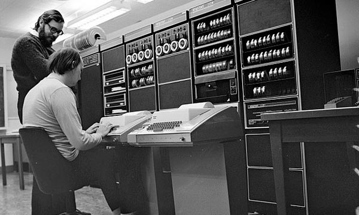
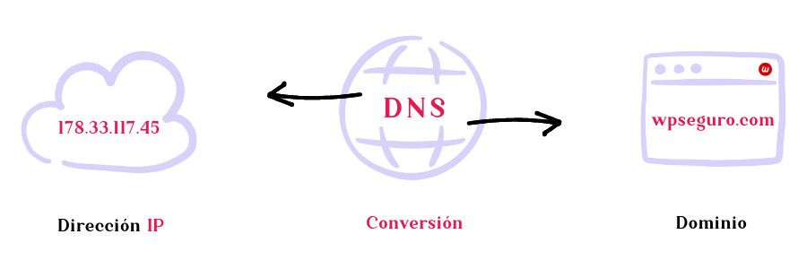

1945-1989 Fundamentos de computación e internet
1945 – Concepto de hipertexto (Vannevar Bush)
Vannevar Bush propone el sistema Memex, una idea teórica para organizar información mediante enlaces, base conceptual del hipertexto.
1958 – Creación de ARPA (EE. UU.)
Se funda la Advanced Research Projects Agency (ARPA), organismo clave para el desarrollo de redes de comunicación avanzadas.
1965 – Primera conexión entre computadoras remotas
Se logra la primera comunicación entre dos computadoras mediante una línea telefónica.
1969 – Nace ARPANET
Se establece ARPANET, la primera red de computadoras operativa, antecesora directa de Internet.
1973 – Diseńo del protocolo TCP/IP
Vinton Cerf y Robert Kahn desarrollan el protocolo TCP/IP, base de la comunicación en Internet.

1978 – Desarrollo del DNS (Sistema de Nombres de Dominio)
Se crea el DNS, permitiendo usar nombres en lugar de direcciones IP numéricas.
1984 – Creación del Domain Name System (DNS)
Se implementa formalmente el sistema de dominios (.com, .edu, .gov, etc.).

1989 – Propuesta de la World Wide Web
Tim Berners-Lee propone la World Wide Web (WWW) en el CERN, sentando las bases del navegador, HTTP y HTML.